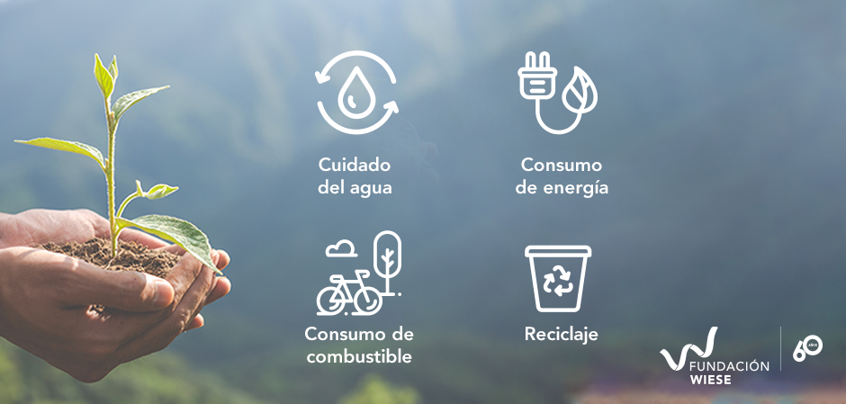

Proyectos e Ideas
Conoce nuestros proyectos e ideas relacionados para ayudar con la sustentabilidad y el medio ambiente.
Hay muchos proyectos medioambientales que promueven una vida sustentable a nivel amplio y pequeño, local, nacional y global, en los que podemos participar.
El cuidado de la salud ambiental es crucial para garantizar que tanto las generaciones futuras como las presentes podamos ser respetuosos con nuestro entorno y podamos vivir una vida saludable en un planeta saludable.
Los proyectos ambientales individuales o domésticos pueden incluir llevar a cabo nuestra propia evaluación de impacto ambiental o huella ecológica. Con lo cual, podremos garantizar que utilizamos energía y agua de manera eficiente y asegurarnos de que nuestros alimentos, muebles y ropa sean de fuentes sustentables.
Se pueden encontrar diversas calculadoras en internet para que las personas y las organizaciones conozcan la forma en que impactan al planeta. También, en esas calculadoras, se puede conocer la manera en que pueden ayudar para minimizar y compensar su impacto al ambiente y, por lo tanto, ser más respetuosos y responsables con las futuras generaciones.
Con el fin de ayudar a marcar la diferencia existen numerosos proyectos en marcha, que van desde campañas locales hasta nacionales. Estas campañas son realizadas por gobiernos y por organizaciones de la sociedad civil y tienen acciones muy concretas como:
- Playas limpias
- Educación a los niños sobre la vida sustentable
- Apoyo a comunidades
- Combate a los impactos de cambio climático
- Mejoramiento de vivienda
A continuacion te dejamos algunas ideas para contribuir en el medio ambiente.
Plantar Arboles
Los árboles son esenciales para el mundo, producen oxígeno, reducen el dióxido de carbono, absorben gases contaminantes, regulan la temperatura, entre otros beneficios. Así que ya sabes, planta un árbol y contribuye al cuidado del medio ambiente.
Ahorrar agua
El agua es un recurso imprescindible y escaso que debemos usar con responsabilidad. Cerrar el grifo mientras te lavas los dientes, bañarte en 5 minutos, juntar el agua de la regadera mientras te bañas, son pequeñas acciones que ayudan a ahorrarla.
Separa la basura
Es importante separar los residuos en distintos botes: orgánica, vidrio, cartón, plásticos y desechos tóxicos. Por tu salud, cuida tu entorno.
Reutiliza todo lo que puedas
Dale segunda vida a tus objetos antes de desecharlos con el fin de ahorrar dinero y evitar comprar todo nuevo. Puede ser tu ropa, juguetes o algún utensilio del hogar.
Conecta con la naturaleza
La naturaleza te protege, te sana, te alimenta y te da todo lo que necesitas para vivir y tener bienestar, cuidarla, valorarla y apreciarla es tarea de todas y todos. Desconecta el cargador de tu celular cuando no lo estés utilizando Esta acción puede hacer una gran diferencia a la hora de ahorrar energía. También aumentarás su vida útil.
